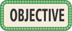

This is a B Learning Resource. This resource is designed mainly for student's autonomous work, but it is also aimed at developing specific abilities with teacher's guidance in the classroom, to improve user's experience in the learning process.
Teaching: To contribute to strengthen students' 4 skills in the foreign language (Listening, Speaking, Writing and Reading), aligned to the level A1+ of the Common European Framework.
Learning: To make students understand simple texts and conversations and make them feel motivated to express ideas and feelings in a written and oral way, using the contents worked in the foreign language.

This digital resource will let the communicative competence be developed, whose main goal is to develop the 4 language skills (Listening, Speaking, Writing and Reading), in order to communicate effectively in your immediate context.
Three topics, each one with two subtopics will be developed. For each topic you will find 4 detailed videos to help you contextualize about the topic to be worked. After each video you will have some activities that will help you to practice and understand the topics. These activities will not be graded; they will be done to lead your understanding around the topic of study. You will have access to the videos and to the reference material all the times you need it, so that you can clear up your doubts with respect to the contents.
After exploring the videos, You will have to develop a set of Listening, Speaking, Writing and Reading activities, which will help you check if the topics worked, are clear enough for you. Besides that, you will receive immediate feedback that will help you to monitor your progress; If you make many mistakes, you will be sent back to watch the contextualization videos and the reference material, so that you will be able to review the topics in which you have any difficulty.
Once developed the above, there will be a final evaluation that contains all the topics worked in the resource. It must not be solved, if all the activities proposed aren’t finished.
Remember that to achieve the goal of this digital learning resource, it is necessary for you to have a good disposition and to rely on the reference material provided.
Students will receive prompt feedback throughout the resource, which will allow them to know their performance.
At the end of the Digital Learning Resource, students will be evaluated through a test which contains all the topics worked throughout the resource. Thereby, they will be able to recognize the contents in which they need a review.
This evaluation will be done through different Listening, Speaking, Writing and Reading activities.